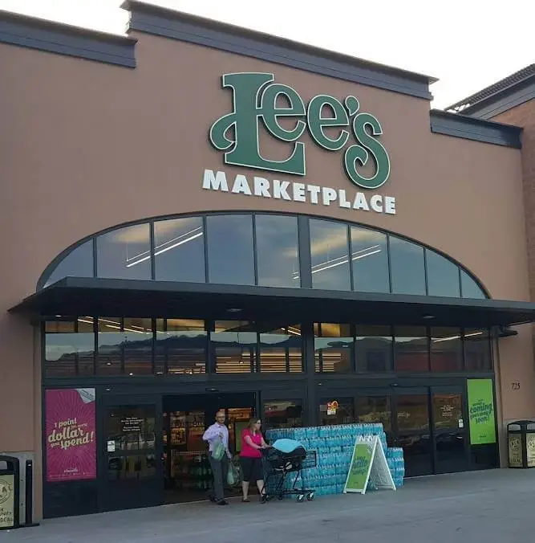

Welcome to Syracuse Chamber of Commerce
Connecting businesses and the community for a stronger economy.
Join the ChamberCurrent Weather in Syracuse, Utah
Upcoming Events
Syracuse City Calender
Learn Morebusiness spotlights

Lee’s Marketplace - Your local grocery store with fresh produce and quality meats.
Explore MoreSupport Local Businesses
Discover and support businesses in Syracuse, Utah. Connect with professionals and local entrepreneurs.
Browse Directory